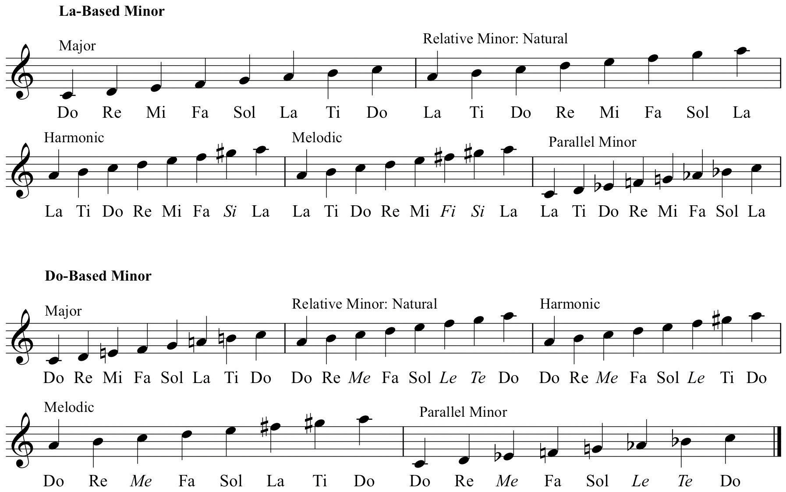

In Chapter 2 "The Elements of Pitch:Sound, Symbol, and Tone", solfége was explained in its historical and pedagogical context, and as one way of labeling pitch and as a mnemonic device. The principal use of solfége as a pedagogical tool is the aural reinforcement of written music.
Many differing solfége systems have evolved, each for a specific reason, for a specific context, or to offer an alternate method to a previous system. They can be classified into two broad categories:
Several subcategories have evolved from Moveable-Do and involve the treatment of the Minor mode. The two most prevalent are called La-based MinorA sub-category of Moveable Do. Major is sung beginning on Do, Minor begins on La. and Do-based MinorA sub-category of Moveable Do. Both Major and Minor begin on Do..
La-based Minor: The Tonic in Major begins on Do. The Tonic in Minor begins on La.
General advantages:
Minor syllables in La-based Minor:
| ˆ | ˆ | ˆ | ˆ | ˆ | ˆ | ˆ | ˆ | ||
| 1 | 2 | 3 | 4 | 5 | 6 | 7 | 8 | ||
| Natural Minor: | La | Ti | Do | Re | Mi | Fa | Ti | Do | |
| Harmonic Minor: | La | Ti | Do | Re | Mi | Fa | Si | La | (Raised 7: Si) |
| Melodic Minor: | La | Ti | Do | Re | Mi | Fa | Si | La | (Raised 6 and 7: Fi-Si) |
Do-based Minor: The Tonic in both Major and Minor begin on Do.
General advantages:
Minor syllables in Do-based Minor :
| ˆ | ˆ | ˆ | ˆ | ˆ | ˆ | ˆ | ˆ | ||
| 1 | 2 | 3 | 4 | 5 | 6 | 7 | 8 | ||
| Natural Minor: | Do | Re | Mi | Fa | Sol | Le | Te | Do | (Me, Le, Te pronounced “may,” “lay,” “tay”) |
| Harmonic Minor: | Do | Re | Mi | Fa | Sol | Le | Ti | Do | (Raised 7: Ti) |
| Melodic Minor: | Do | Re | Mi | Fa | Sol | La | Ti | Do | (Raised 6 and 7: La-Ti) |
Each system has its advocates and its detractors. Each has perceived advantages and disadvantages. Having used all known systems, the author has had the greatest student success employing the Do-based model. After an initial familiarization period (because of the use of altered syllables), the vast majority of typical undergraduate music theory students respond to this system.
Figure 3.15 La-based and Do-based compared
Regardless of which solmization system is used, the purpose remains the same. After a period of familiarization and rote drill, the student will begin to recognize patterns aurally. This is to say that recognition will not merely be aural recognition when heard, but rather, specific patterns will be “engraved” in the student’s mind. These patterns will be solfége-triggered responses. This audio-acoustic trigger response will increase and become more fluent with practice.
The student should understand: